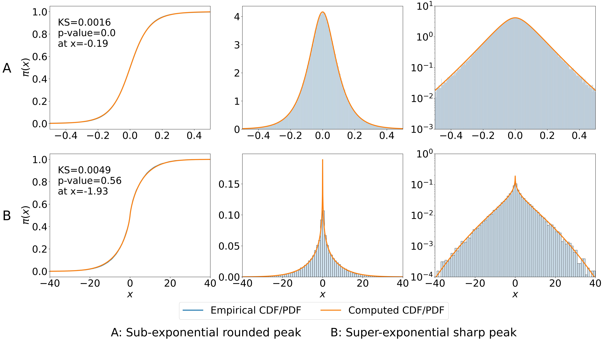

✳ INTERACTIVE RESEARCH COMPANION
The shape
of an image.
An image.
A thousand hidden patterns.
Generated image · Actual Haar coefficients
01 / THE PUZZLE
What did the
camera miss?
Two different pictures can leave the exact same measurement.
The measurement stays fixed while hidden detail changes.
Data alone cannot pick one picture. We need a prior—explicit expectations about which patterns are plausible.
Background & motivation Inverse problems & priors ＋
In an inverse problem, we work backward from incomplete or noisy measurements. Because different originals can produce the same reading, observations alone underdetermine the answer.
A prior models which signals are plausible before seeing this measurement; a posterior combines prior and data. Our study tests whether a flexible family of priors actually matches real image coefficients.
02 / CHANGE THE ALPHABET
Keep less.
See what survives.
A few strong patterns carry most of a picture; most detail coefficients sit near zero.
WHERE ALL 4,095 DETAILS LAND
Near zero means little local contrast; large signed values encode sharp edges.
A sharp peak near zero with heavy tails: quasi-sparsity. Compare “Busy texture” as a counterpoint.
Representations & scope How the paper groups coefficients ＋
A coefficient measures how strongly a pattern appears: Fourier tracks global frequencies, Haar compares local neighbors, Gabor responds to oriented textures, and AlexNet filters capture learned local features.
The paper models pooled groups of related coefficients across large datasets—not pixels of one photograph. Here RMSE measures unclipped root-mean-square error while display intensities clamp to [0, 1]; this retention demo illustrates sparsity rather than a paper benchmark.
03 / A DISTRIBUTION MADE OF DISTRIBUTIONS
From values
to chances.
Probability is area under a curve. Mixing widths reshapes both peak and tails.
Choose a fresh variance θ for every draw while keeping every bell centered at zero.
- 1 Pick variance θ.
- 2 Draw X ∼ N(0, θ).
- 3 Collect draws.
Each thin curve is weighted equally. The thick curve is their mixture.
A scale mixture picks one bell per draw—it does not average normal draws. At full variety, midpoint quantiles of an exponential law approximate Laplace mixing.
Different widths, one center: the mixture stays symmetric and single-peaked.
04 / MEET THE ACTUAL MODEL
One family.
Many shapes.
From sharp centers to power-law tails, these curves evaluate the paper’s defining equations.
β = (η + 1.5) / r =
Exponential variance mixing creates the Laplace distribution.
Hover or use arrow keys on either chart to inspect synchronized linear and log₁₀ heights at the same value x.
Equations & parameter notes
Here fΘ(θ) = |r| / [Γ(β)ϑ] · (θ/ϑ)η+1/2 exp[−(θ/ϑ)r] for θ > 0. Laplace is exact at r = 1, η = −1/2 with scale √(ϑ/2); Cauchy is exact at r = −1, η = −2 with scale √(2ϑ) and has no finite mean or variance.
For r > 0, tails decay like exp(−c|x|2r/(1+r)) up to prefactors; for r < 0, density tails follow |x|2η+2. Shape and scale interact, and a Gaussian is approached as mixing variances concentrate rather than at one finite slider setting. Note that η = 0 relates to ℓp penalties via a profiled joint-MAP objective, not marginal ℓp densities.
Definitions and parameter space · §3.2 ↗05 / PUT A MODEL ON TRIAL
How close
is close?
The Kolmogorov–Smirnov distance measures the largest vertical gap between cumulative curves.
—
Width and shape both affect the gap.
The coarse search tests 24 variance-matched shape pairs on this synthetic sample—an inspectable analogue of the paper’s fitting pipeline (descriptive in-sample D, not calibrated p-values).
Why can a tiny gap still fail a statistical test? Sample size & cutoffs ＋
SMALL GAP ≠ NONREJECTION
More observations.
A stricter ruler.
Hold a hypothetical gap at D = 0.02. For an ideal fixed continuous model with n independent draws, the approximate 5% KS cutoff is 1.358 / √n (fitting parameters or dependence alters calibration).
06 / LEAVE THE TOY WORLD
So, does
the model fit?
Same images, different representation—sometimes a dramatically different answer.
How did the research get here? Walk through the 6-step method ＋
SHARE OF FITTED COEFFICIENT GROUPS
passes, as reported
spaceNet: 100% Fourier → 53.1% Haar → 42.9% AlexNet filters. Representation determines which patterns the prior must explain.
How groups & pass categories are defined
Percentages count fitted coefficient groups pooled across images—not individual images or reconstruction scores. Table 4 omits per-row group counts, and “combined pass” sums statistical passes with practical passes (which include visual judgment on in-sample fits).
See the actual fitted curves Published Figure 8 ＋
PUBLISHED EVIDENCE
Two real fits.
Two different shapes.
Figure 8 contrasts a rounded-peak, slow-tail fit (pastis Fourier) with a sharp-peak, fast-tail fit (COCO indoor Haar).
Figure 8 in context ↗
View full-size figure ↗07 / THE MUSEUM OF USEFUL FAILURES
A model
has edges.
Symmetry, a shared zero center, and continuity set strict structural limits on this family.
THE MODEL BOUNDARY
Constructed schematics motivated by reported asymmetry, multimodality, and spike-and-slab-like behavior (e.g., flat water regions in spaceNet).
Can matching histograms hide dependence? Inspect & shuffle points ＋
ZERO CORRELATION ≠ INDEPENDENCE
Same histograms.
Hidden connections.
Hover across X on the scatter plot to slice a narrow vertical band. Before shuffling, knowing X fixes |Y| = |X| despite zero correlation.
The points lie on two diagonals. They are dependent even though their correlation is zero.
08 / PUT THE IDEA TO WORK
Less noise.
Which details stay?
A prior shapes every denoised coefficient—click or drag across the signal to inspect each decision.
What the paper establishes Premise, finding & boundary ＋
The premise
An imaging prior should resemble the transformed coefficients it models, not merely make optimization convenient.
The finding
Generalized-gamma scale mixtures describe many empirical coefficient groups beyond standard Gaussian or Laplace choices—contingent on dataset and representation.
The boundary
Marginal fit is one ingredient: it does not by itself establish independence, calibrated uncertainty, or superior downstream reconstruction.
Fit assumptions to relevant data—then test the full inference pipeline on its real task.
FOLLOW THE THREAD
Sources & field notes.
Do Generalized-Gamma Scale Mixtures of Normals Fit Large Image Datasets?
Brandon Marks, Yash Dave, Zixun Wang, Hannah Chung, Riya Patwa, Simon Cha, Michael Murphy & Alexander Strang.
arXiv:2512.17038v3 · 10 April 2026 · Preprint.
How this companion stays faithful to the research
Equations before shorthand. Sampling and density calculations follow Eqs. (2)–(4) via normalized log-gamma quadrature; CDFs evaluate E[Φ(x/√Θ)].
Simulations vs. reported evidence. Interactive teaching scenes are explicitly separated from attributed Table 4 results and Figure 8.
Scope. Brain MRI datasets in the paper are diffusion-generated synthetic volumes/slices. Fits are descriptive in-sample evaluations; parameter estimation and dependence change textbook KS calibration.